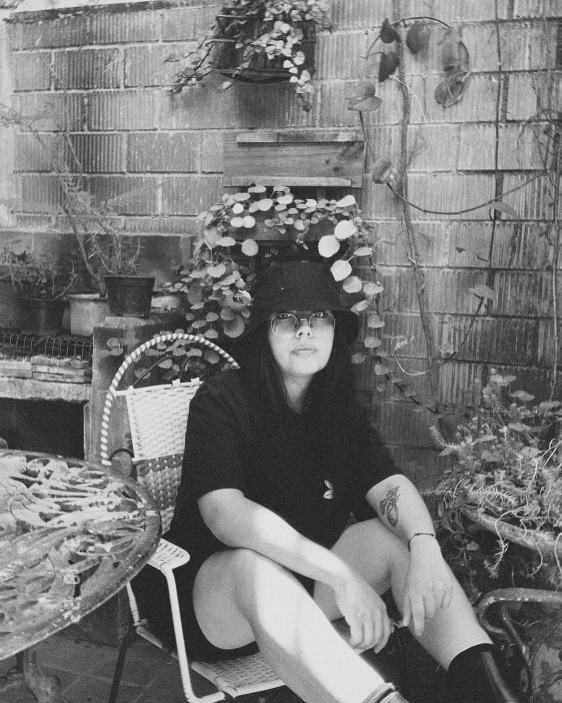

Soy Frida Rocha Diseñadora Gráfica enfocada en la Ilustración,
siempre he estado apegada al arte, mi trabajo está basado en mantener técnicas análogas
combinandolas
con lo digital, ayudandome a innovar mis ideas con originalidad.
En mi marca Brocha ART es donde plasmo mis ideas por medio de un estilo basado en lo enigmático, mi
inspiración me lleva a personajes de fantasía, imgánes algo surreales y en su mayoría acompañadas de
frases metafóricas paraa empatizar con el espectador.